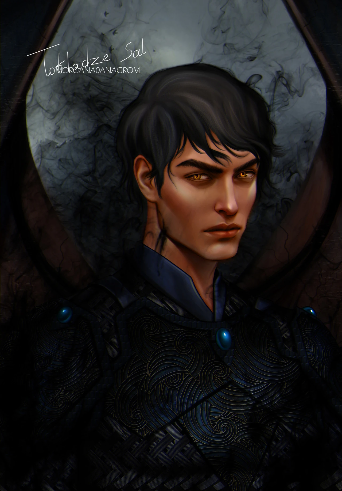

Top 5 Personagens da Saga Corte de Espinhos e Rosas
5º lugar
Azriel
Azriel é membro da Corte Noturna e parte do Círculo Íntimo de Rhysand. Ele é amigo de infância dele e de Cassian. Ele é um Encantador de Sombras, mestre-espião de Rhysand, o Grão-Senhor da Corte Noturna. Ele é considerado um dos IIIyrianos mais poderosos da história de Prythian ao lado de Rhysand e Cassian.
4º lugar
Morrigan (Mor)
Morrigan, também conhecida como Mor, é membro do Círculo Íntimo de Rhys e a terceira no comando da Corte Noturna. Ela supervisiona a dinâmica entre a Corte dos Pesadelos e a Corte dos Sonhos, e governa tanto Velaris quanto a Cidade Escavada. Sua família costumava governar o Norte antes da família de Rhysand.
3º Lugar
Cassian
Cassian é um membro da Corte Noturna e faz parte do Círculo Íntimo de Rhysand. Ele é um amigo de infância de Rhys e Azriel. Se tornou o Comandante Geral dos exércitos da Corte Noturna. É descrito como um dos Illyrianos mais poderosos da história de Prythian ao lado deAzriel Azriel e Rhysand.
2º Lugar
Feyre Archeron
Feyre Archeron é a Grã-Senhora da Corte Noturna e a primeira Grã-Senhora de Prythian. Feyre tem um lado sombrio que ela não se importa de mostrar, impulsionada por sua compaixão, determinação, natureza de se sacrificar e fé com para aqueles que ela ama. Além disso, Feyre também é uma artista perspicaz.
1º Lugar
Rhysand (Rhys)
Rhysand é o Grão-Senhor mais poderoso da história e o atual governante da Corte Noturna, ao lado de Feyre. Rhys é muito arrogante, pois ele sabe exatamente o quão bonito é, ocasionalmente fazendo piadas e comentários sobre sua beleza estonteante. Ele é extremamente sombrio em termos de seu comportamento e tem um ar de mistério e sensualidade em torno dele. Ele lida com tudo com um certo nível de casualidade, cortesia e graça que é tão selvagem e perigoso quanto bonito e notável. No entanto, mesmo que ele aja como sendo descuidado e cruel, ele realmente se importa com certas coisas e fará qualquer coisa, sacrificará qualquer coisa, para mantê-las seguras e ilesas. Ele ama suas asas e voar. Ele também adora a Corte dos Sonhos.